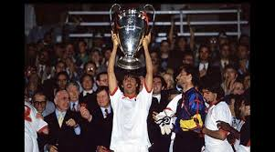
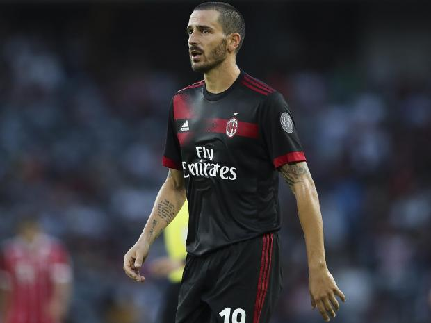
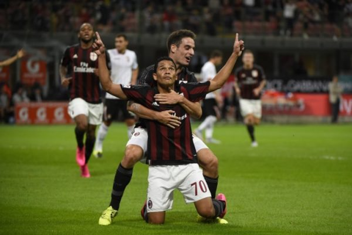

AC Milan have spent ?161.08 million this summer as the club looks to regain its place as a top club in Europe. Will this spending only help them temporarily or can they have a second golden era?
Firstly, let’s look into Milan’s history.

Milan experience their Golden era from 1987 to 1996. They won 17 trophies in this nine-year period, including a Champions League and five domestic titles.
Winning was part of the club at this time. Signings were made each season strengthening the squad but they did not overley spend.
The success of the club also came from academy graduates; the likes of Franco Baresi and Paolo Maldini are two highlights of the talent that was produced.
This is what allowed the Golden Era to be sustained for nine years, however this balance went missing at the club since.
But is it back now?
Milan has spent a total of ?161.08 million on players this season to rebuild a squad depleted by the sale of key players, like Kaka to Real Madrid or Zlatan Ibrahimovic to Paris Saint-Germain, and a lack of adequate replacements.
Investment was needed at the start of this season to allow the club end the four year run without Champions League qualification.
Balancing the spending, the academy has produced the next great Italian goalkeeper after Gianluigi Buffon retires in Gianluigi Donnarumma.
He is Milan’s number one at the age of only 18 and given the interest of top European clubs interested in the prodigy, it’s clear that Milan have obviously produced a wonderkid.
This is a sign that the academy is not sitting dormant, they have got back to old ways, allowing the squad balance to be restored.

Milan have made ten signings, most of which are impressive pieces of business, but who is the best signing they have made? Leonardo Bonucci, bought for ?35.7 million; it’s one hell of a signing.
Bonucci was an enforcer at the back for Juventus last season as they conceded just seven goals in last year’s Champions League, only three of which came before the final.
AC Milan has signed one of the best centre-backs in the world for a good fee. He may be old but his ability is undoubted.
Solidifying the backline is key. In the golden era, Milan were solid at the back (the highest amount of goals conceded during that period was 32 compared to last season when they shipped 45).
If they ever want to get close to silverware, they need to reduce the number of goals conceded and Bonucci is the man for the job.
If they do this, how long could success last? Some of the younger players signed have already played in the European competitions (the Champions League and Europa League).
Andre Silva is a prime example; last season he scored four and assisted two in eight games for FC Porto in the Champions League.
Contributing six times in eight games is impressive for a player in his prime, and stunning for a 21-year-old.
He matched Falcao’s scoring in the group stage for AS Monaco and beat Manchester City man David Silva’s, showing that he has talent.
At AC Milan, players like Silva will flourish due to the amount of game time given to them and also due to the clubs coaching staff that are good at developing young players.
If they can keep hold of these talented youngsters, AC Milan may not need to invest heavily for seasons to come as these players will hit their prime.
This also balances the squad between young player and experienced stalwarts of the club.

Why has the club just started spending? Well, Milan was taken over for ˆ740 million on 13th April 2017.
Led by Yonghong Li, a Chinese group took over the Rossoneri, and the spending has been funded by the new owners to turn around the clubs previously stated lack of Champions League football.
With new owners at the helm, could Milan become the biggest club in Italy by adopting a similar to Chelsea or Manchester City?
To summarise, AC Milan’s rebuild has been a success on paper. The squad seemingly has depth and the ability to challenge any team domestically and most teams in Europe.
Under new ownership, the club has spent the money needed to make the sleeping giant awake from its slumber.
The signings made can bring the club success but whether they can maintain this success long term is yet to be seen., and the actions of other clubs will majorly affect this.
As transfer fees show, Milan may not be able to match the biggest of clubs, making them unable to attract the calibre of player they need so young players need to be retained..
Also, keeping the youth can reduce the number of players that need to be signed, helping the club stay financially healthy.